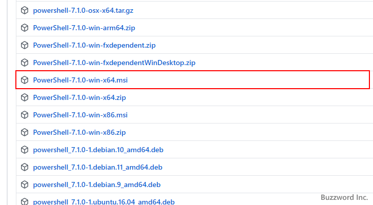

PowerSherllをインストールしてシェルとして設定する
Windows 環境でターミナルを開いて Windows PowerSherll がシェルとして起動した場合、「新しいクロスプラットフォームの PowerShell をお試しください」とメッセージが表示されます。これは以前から使われていた Windows PowerShell に代わって新しい PowerShell が利用可能になっているためです。ここでは PowerShell を Wiindows にインストールしたあとでターミナルのシェルとして設定する手順について解説します。
PowerShell 7のダウンロード
Window 環境で Visual Studio Code を起動し、ターミナルを開くと次のようなメッセージが表示されることがあります。「新しいクロスプラットフォームの PowerShell をお試しください https://aka.ms/pscore6」。これは従来から利用していた Windows PowerShell に代わる PowerShell ( Windows が付かない別のアプリケーション)があるためです。
それでは PowerShell のダウンロードからおこないます。メッセージに表示されている https://aka.ms/pscore6 へアクセスしてください。
「WindowsへのPowerShellのインストール」をクリックしてください。
開いたページの中にある「インストーラーパッケージをダウンロードする」のブロックにある「リリース」と書かれた個所にあるリンクをクリックしてください。
GitHub のページが表示されます(直接このページへアクセスしたい場合は下記の URL へアクセスしてください)。
・https://github.com/PowerShell/PowerShell/releases
安定版の v7.1.0 Release of PowerShell のところまでスクロールしてください。
少し下へスクロールすると、 OS 別のダウンロードファイルへのリンクが表示されています。今回は Windows 10(64bit) 環境でインストーラー付きのものを使用するので「PowerShell-7.1.0-win-x64.msi」をクリックしました。

ダウンロードが開始されますので、任意の場所に保存しておいてください。 PowerShell 7 のダウンロードはこれで完了です。
PowerShell 7のインストール
続いてインストールを行います。ダウンロードしたファイルをダブルクリックして起動してください。次のような画面から開始されるので「Next」をクリックしてください。
インストールするディレクトリを指定します。必要であれば変更してください。今回はこのままとしました。設定が終わりましたら「Next」をクリックしてください。
オプションの設定画面です。今回はデフォルトのままとしました。設定が終わりましたら「Next」をクリックしてください。
最終確認画面です。問題なければ「Install」をクリックしてください。
次のように表示されれば PowerSherll 7 のインストールは完了です。「Finish」をクリックして終了してください。
PowerShellをシェルとして設定する
それでは PowerShell を Visual Studio Code のターミナルを開いた時に起動するシェルとして設定してみます。シェルの変更方法について詳しい手順は「ターミナルで起動するシェルを変更する」を参照されてください。
シェルの変更手順を進めていくと、シェルの選択画面で「Command Prompt」と「Windows PowerShell」の他に「PowerShell」が候補として表示されます。 PowerShell をクリックしてください。
これで起動するシェルの変更は完了です。ではターミナルを開いてください。
新しいターミナルを開いてみると、設定した PowerShell がシェルとして起動しました。
-- --
PowerShell を Wiindows にインストールしたあとでターミナルのシェルとして設定する手順について解説しました。
( Written by Tatsuo Ikura )

著者 / TATSUO IKURA
初心者～中級者の方を対象としたプログラミング方法や開発環境の構築の解説を行うサイトの運営を行っています。